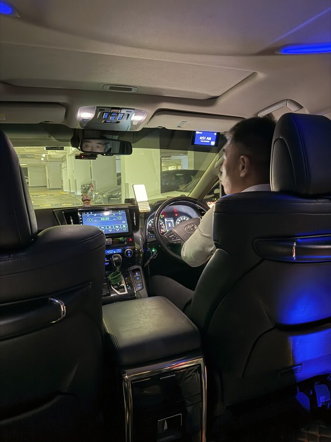
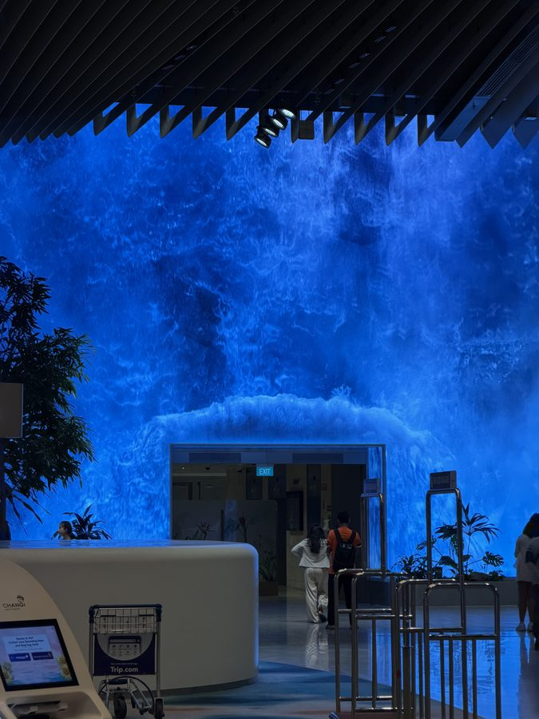

28 days in Japan. Paul and Joanne leave Singapore before sunrise on 1 July 2026 — a taxi at 4:50 in the morning, Changi Airport lit up like a dream, and a 7-hour flight standing between them and Tokyo.28天日本之旅。2026年7月1日，Paul和Joanne在日出前离开新加坡——凌晨4:50的出租车，灯火辉煌的樟宜机场，以及将他们与东京隔开的7小时飞行。日本での28日間。2026年7月1日、PaulとJoanneは夜明け前にシンガポールを発つ——午前4時50分のタクシー、夢のように輝くチャンギ空港、そして東京までを隔てる7時間のフライト。
4:50 AM. The taxi arrives.凌晨4:50。出租车来了。午前4時50分。タクシーが到着。
Still dark outside. The city quiet. The alarm goes off at 4:00 AM and even though I have been awake for a while already — the way you are always awake before an early flight — it still feels abrupt. There is a particular kind of morning that only belongs to travellers. This is one of them.外面还是黑的。城市很安静。闹钟在凌晨4点响起，虽然我已经醒了一段时间——就像早班飞机前你总是会提前醒来——但感觉还是很突然。有一种特别的清晨只属于旅行者。今天就是其中之一。外はまだ暗い。街は静かだ。目覚まし時計は午前4時に鳴った。早朝便の前はいつも先に目が覚めてしまうものだが、それでも突然に感じる。旅人だけが知る特別な朝がある。今日がまさにそれだ。
The taxi came right on time. A big Toyota — smooth, comfortable, cool blue ambient lighting inside the cabin. I sat in the back with Joanne and looked through the windscreen at Singapore in the dark. The streets were empty. The expressway was clear. The driver said nothing and I said nothing. At that hour, silence is the right thing.出租车准时到来。一辆大型丰田——平稳、舒适，车厢内有蓝色的氛围灯。我和Joanne坐在后座，透过挡风玻璃看着黑暗中的新加坡。街道空无一人，高速公路畅通无阻。司机沉默，我也沉默。在那个时刻，沉默是最合适的。タクシーは時間通りに到着した。大きなトヨタ車——なめらかで快適、車内には涼しげな青いアンビエントライト。私はJoanneと後部座席に座り、フロントガラス越しに暗闇の中のシンガポールを眺めた。通りは無人、高速道路も空いていた。運転手は何も言わず、私も何も言わなかった。この時間には、沈黙こそがふさわしい。

I took this photo from the back seat looking at the dashboard. Clock says 4:51 AM. The fare meter reads $9.20. That is the last Singapore dollar I spend before Japan. I remember thinking — the next time I am in a taxi, it will be in Tokyo.我从后座拍下这张照片，看着仪表盘。时钟显示凌晨4:51，计费器显示$9.20。这是我在日本之前花的最后一张新加坡元。我记得当时心想——下一次坐出租车，就会是在东京了。後部座席からダッシュボードを見て、この写真を撮った。時計は午前4時51分。メーターは9.20ドル。日本に着く前に使う最後のシンガポールドルだ。次にタクシーに乗るのは東京だろうな、とふと思ったのを覚えている。
Changi Airport at dawn.黎明时分的樟宜机场。夜明けのチャンギ空港。
We arrived at Terminal 2 just before 5:30 AM. Even at this hour, the airport was alive — that particular kind of airport energy that exists nowhere else in the world. People moving with purpose and luggage. The air-conditioning cold and clean.我们在5:30前抵达2号航站楼。即使在这个时间，机场依然充满活力——那种只存在于机场的特殊能量，在世界其他地方找不到。人们带着行李和目的地移动。空调冷而清新。午前5時半前にターミナル2に到着した。この時間でも空港は活気に満ちていた——世界のどこにもない、空港特有のあのエネルギー。荷物を抱え目的を持って歩く人々。冷たく澄んだ空調の空気。
And then I saw it — the blue wall.然后我看到了——那面蓝色的墙。そしてそれを見た——青い壁。

The giant LED waterfall installation in Terminal 2 fills the entire hall with deep, moving blue light. Waves of colour rolling across the ceiling and walls — it looks like being underwater, or standing inside the sky just before a storm. I have seen this many times. It never stops being beautiful. At 5:30 in the morning, with almost nobody around, it is something else entirely.2号航站楼巨大的LED瀑布装置将整个大厅充满深邃流动的蓝色光芒。颜色像波浪一样在天花板和墙壁上翻滚——就像置身水下，或是站在暴风雨前的天空中。我已经见过很多次了，但它从未失去美丽。在清晨5:30，几乎没有人的时候，这感觉完全不同。ターミナル2の巨大なLED滝のインスタレーションが、深く揺れ動く青い光でホール全体を満たしている。天井と壁を波のように流れる色彩——まるで水中にいるか、嵐の直前の空の中に立っているようだ。何度も見てきたが、いつまでも美しい。ほとんど人のいない朝5時半、それはまったく別のものに見えた。
Joanne and I walked through slowly. Neither of us was in a rush. The flight was at 7:40. We had time. Changi deserves to be walked through slowly.Joanne和我缓慢地走过。我们都不急。航班在7:40。我们有时间。樟宜值得慢慢走。Joanneと私はゆっくり歩いた。二人とも急いでいなかった。フライトは7時40分。時間はあった。チャンギはゆっくり歩く価値がある。
The smart move: $5.88 eSIM.精明之举：$5.88的eSIM。賢い選択：5.88ドルのeSIM。
While waiting at the terminal I took care of something practical — the Japan data SIM. I had done some research beforehand and found SparkRoam: Japan eSIM, 10 GB, 30 days, for $5.88. The cheapest option I could find. And it covers the full 28 days of this trip with 2 days to spare.在航站楼等候时，我处理了一件实际的事情——日本数据SIM卡。我之前做了一些研究，找到了 SparkRoam：日本eSIM，10GB，30天，只需$5.88。这是我能找到的最便宜的选择，而且它涵盖了这次旅行的全部28天，还多出2天。ターミナルで待つ間、実用的な用事を片付けた——日本のデータSIMだ。事前に調べて見つけたのが SparkRoam：日本eSIM、10GB、30日間で5.88ドル。見つけた中で一番安い選択肢だった。しかも今回の旅行28日間をすべてカバーし、2日分の余裕もある。
I circled the total in pink on the screen. $5.88. For 28 days of internet in Japan. That is less than the price of a cup of coffee. Data sorted before boarding — so the moment we land at Narita, I can navigate, communicate, and send photos straight away. No hunting for a SIM card at the airport. No roaming charges.我在屏幕上用粉色圈出了总价。$5.88。28天的日本网络。比一杯咖啡还便宜。登机前搞定网络——这样我们一落地成田，就可以立即导航、通讯和发送照片。不用在机场寻找SIM卡，也不用担心漫游费。画面の合計金額をピンクで丸く囲んだ。5.88ドル。日本での28日間のインターネット。コーヒー一杯より安い。搭乗前にデータの手配を済ませたので、成田に着いた瞬間からナビ、連絡、写真の送信がすぐにできる。空港でSIMカードを探す必要もない。ローミング料金の心配もない。
📄 View eSIM Receipt (PDF)查看eSIM收据（PDF）eSIM領収書を見る（PDF）Japan. Again.日本。再次。日本。再び。
We visited Japan last year too — about 8 months ago. That was our Kyushu road trip: one month, a rental car, no fixed plan, October to November 2025. So I know what is waiting — the politeness of the people, the precision of the trains, the food that makes you stop mid-bite and look up. The quiet of temples. The noise of Shinjuku. The way everything is exactly where it should be.去年我们也去过日本——大约8个月前。那是我们的九州公路旅行：一个月，一辆租来的车，没有固定计划，2025年10月到11月。所以我知道那里等待着什么——人们的礼貌，火车的精准，让你吃到一半停下来抬头看的食物。寺庙的宁静。新宿的喧嚣。一切都恰到好处的那种感觉。去年も日本を訪れた——約8か月前のことだ。あれは九州のロードトリップ：レンタカーで1か月、決まった計画もなく、2025年10月から11月。だから何が待っているか分かっている——人々の礼儀正しさ、電車の正確さ、食べる手を止めて思わず見上げてしまう料理。寺院の静けさ。新宿の喧騒。すべてがあるべき場所にきちんと収まっている感覚。
But this time is different. This time it is 28 days. Six days in Tokyo, then Peach Aviation to Sapporo, then three weeks in Niseko. We are not visiting Japan. We are living in it, for a month.但这次不同。这次是28天。东京六天，然后乘Peach航空到札幌，再在二世谷待三周。我们不是在参观日本，而是在其中生活，整整一个月。だが今回は違う。今回は28日間。東京で6日間、その後Peach Aviationで札幌へ、そしてニセコで3週間。私たちは日本を訪れているのではない。1か月間、そこで暮らしているのだ。
Flight SQ 632 departs at 7:40 AM. Seven hours and forty-five minutes. Joanne has her seat — 59D. I have mine. By this afternoon, Singapore time, we will be in Tokyo.SQ 632航班在早上7:40起飞。七小时四十五分钟。Joanne坐她的座位59D，我坐我的。按新加坡时间，今天下午，我们就会在东京了。SQ 632便は午前7時40分に出発する。7時間45分。Joanneの席は59D。私は私の席。シンガポール時間の今日の午後には、東京に着いているだろう。
I am 70 years old. Retired at 67. And I am heading to Japan on a Wednesday morning with my wife, 28 days ahead of us, nothing urgent to get back for.我70岁了，67岁退休。这个周三早上，我和妻子正前往日本，前方有28天的时光，没有什么急事需要赶回去。私は70歳。67歳で退職した。この水曜日の朝、妻と共に日本へ向かっている。目の前には28日間、急いで戻る用事は何もない。
This is exactly what retirement is supposed to feel like.这正是退休本该有的感觉。これこそ、退職生活が本来あるべき感覚だ。